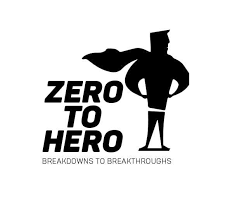
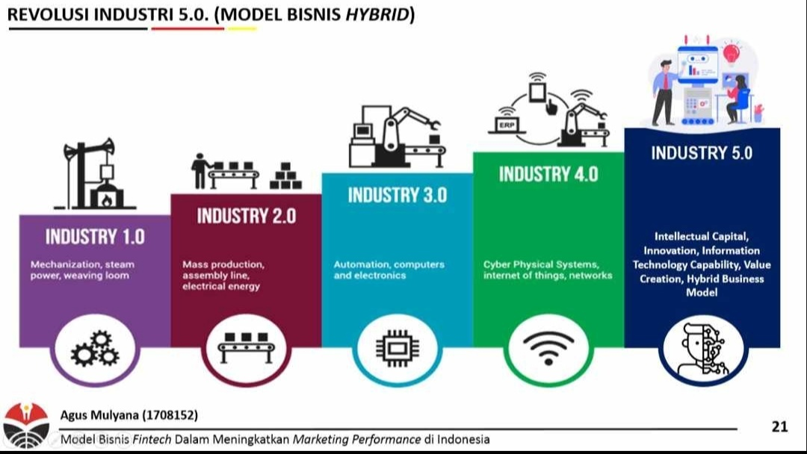

ARTIKEL
Buat Sebuah Artikel
Kami sangat menghargai karya tulis anda dalam bentuk sebuah artikel, kami juga sangat mengapresiasi segala bentuk kreatifitas mengolah kata. Maka dari itu kalian bisa bergabung menjadi Blogger dengan gratis disini dan artiel terbaik akan ditampilkan disini. Bergabunglah sekarang juga.
Readers: 19.177.013
Dalam secangkir kopi mengajarkan kita apa arti sesungguhnya dari hidup, dalam secangkir kopi mempertemukan kita dalam hidup, dan dalam secangkir kopi juga membuat kita menemukan arti untuk hidup. Disinilah saya membagikan pengalaman saya yang merubah hidup saya ditemani secangkir kopi.Baca Selengkapnya
Readers: 2.782
Assalamualaikum Sobat Beriman. Menyikapi kemajuan teknologi yang pesat mungkin bikin kita terlena dengan kenikmatan dan kemudahan yang dapatkan, tapi kita juga mestinya tetap inget dong dengan kewajiban kita sebagai umat beragama.Baca Selengkapnya
Readers: 57.035.723
Sosok dibalik penamaan Kabupaten baru ini masih menjadi misteri hingga saat ini. Dikatakan nama tersebut dipilih karena Wahyudi adalah seorang yang sangat berpengaruh dalam kemajuan Indonesia, namun beliau bergerak secara bawah tanah dan tidak diketahui khalayak umum secara sistematis. Hanya Presiden dan beberapa staff yang mengetahui identitas dari orang beriinisal WW tersebut.Baca Selengkapnya

Readers: 9.873
From Zero To Hero. Ungkapan yang menggambarkan Bupati Aldi dimana dulu ia hanyalah lulusan SMK 2 Kabupaten Tangerang, dahulu sempat menganggur setelah lulus sekolah dan hanya kerja serabutan. Beliau hanya tinggal di rumah kecil di Kampung Gelam hidup sederhana dengan 2 Kakak Perempuannya. Tapi takdir berkata lain sekarang dia menjadi Bupati muda dari Wahyudi.Baca Selengkapnya
Readers: 27.177.013
Baru-baru ini Pemda Wahyudi membuat gempar. Dimana mereka membuat kebijakan baru yaitu Keadilan sosial bagi buruh dan kebijakan lain yang sangat mengutamakan buruh dalam sektor industri, lalu menolak kebijakan Kapitalisme dan UU Cipta Kerja. Lantas apakah ini menjadi cikal bakal paham kiri akan diterapkan di IndonesiaBaca Selengkapnya
Readers: 5.290
Salam sejahtera semuanya. Disini saya ingin berbagi sedikit tentang pendapat saya sebagai masyarakat Wahyudi yang menilai seberapa efektifnya pemecahan Kabupaten dari sisi Ekonomi, Hukum, dan Politik yang akan saya Kupas semuanya hingga tuntas.Baca Selengkapnya
Readers: 4.027.536
Terkadang dalam hidup kita menjumpai suatu situasi dimana kita harus menyelesaikan satu hal tetapi keadaan memaksa kita untuk mundur, lantas apakah kita harus tunduk kepada keadaan yang memaksa kita untuk mundur? Jawabannya adalah YA. Mengapa demikian? Karena terkadang kita butuh waktu untuk memikirkan suatu hal kedepannya agar kita lebih siap dalam menghadapi suatu rintangan, suatu cobaan maka dari itu kita mundur satu langkah dan maju untuk dua langkah atau lebih.Baca Selengkapnya
Readers: 1.726.112
Assalamualaikum sobat beriman. Perkenalan saya Wahidin Anshor atau bisa kalian sebut juga Mang Bewok Al Bantani ya karena saya dari Banten ya. Oke dikesempatan kali ini saya akan membagikan sedikit ilmu bagaimana para Khalifah terdahulu memimpin negeri pada era tersebut dan juga apakah masih relevan cara tersebut digunakan di masa kini.Baca Selengkapnya

Readers: 863.001
Dalam sebuah perkembangan industri dibutuhkan pula kemajuan di bidang teknologi yang mumpuni untuk bersaing dengan perusahaan asing. Lalu apakah perkembangan IPTEK di Indonesia sudah mencapai kriteria yang dibutuhkan untuk mencapai Industry 5.0.Baca Selengkapnya
Readers: 2.321.472
Presiden Joko Widodo membuat keputusan yang diluar dugaan yaitu mengusulkan daerah otonomi baru perpecahan dari Kabupaten Tangerang, yaitu Kabupaten Wahyudi yang menjadi pusat Ekonomi baru demi mengatasi kepadatan dari Kabupaten Tangerang.Baca Selengkapnya